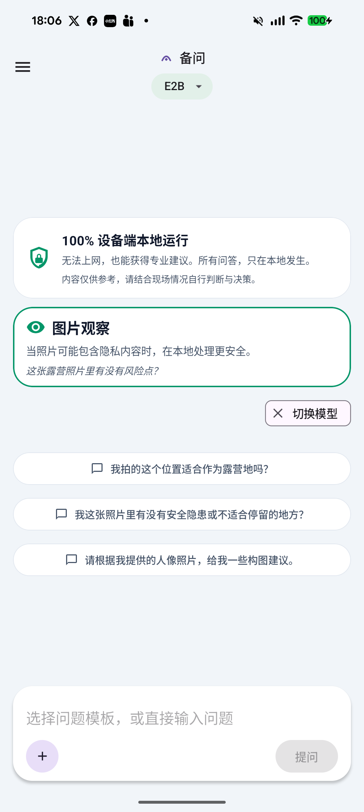
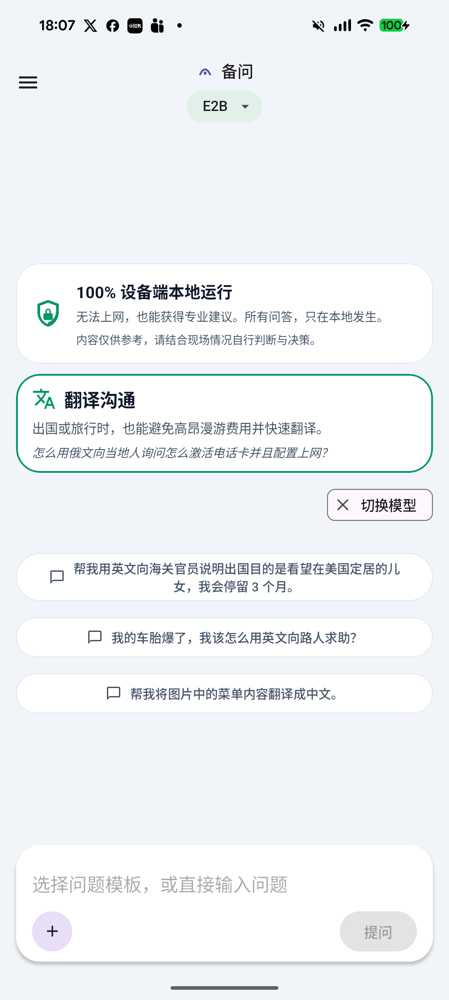
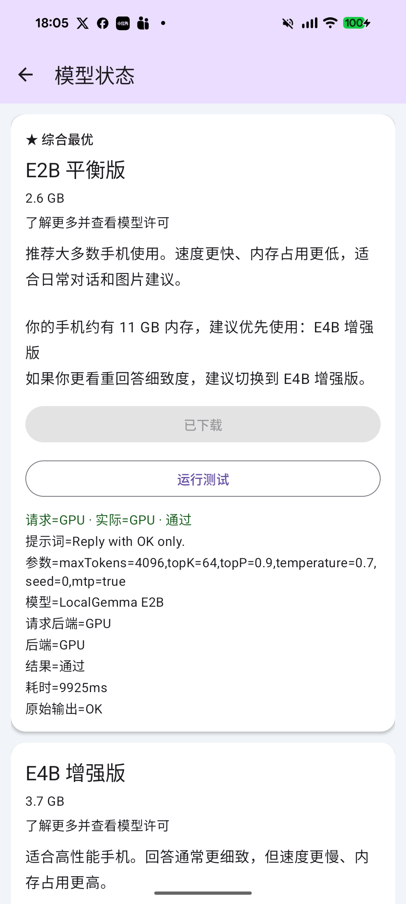

iPhone / iPad
iOS 版
打开后先进入主体验。模型下载不会阻塞入口，ready 后低优先级预热，尽量减少第一次提问等待。
- 无模型也能进 App
- 下载、校验、安装、ready 分段可见
- 免费使用 + 打赏型 IAP





备问是一个离线优先的应急 AI 助理。无论你在户外、旅行、弱网环境，还是只是想少用流量，都可以先进入主界面，再通过本地模型完成问答、翻译和图片辅助判断。

iOS 和 Android 共用一套产品边界，但分别保留平台体验差异。iOS 更强调启动后预热与打赏型 IAP，Android 更强调广告不遮挡关键回答和 Android 15 基线。
打开后先进入主体验。模型下载不会阻塞入口，ready 后低优先级预热，尽量减少第一次提问等待。



Android 版本从 Android 15 起步，广告只承担变现，不打断输入、停止按钮和高风险提示。


备问不是通用云端聊天框，而是面向弱网和突发场景的本地优先助手。主路径围绕“先进入、先回答、可终止、可扫读”来设计。
没有模型时也能先进入 App，阅读功能介绍、查看下载状态，再决定是否开始下载。
回答按段落逐步显示，Stop 始终可见，用户可以随时停止并保留已经生成的内容。
支持帐篷、钓鱼点位、未知蘑菇和危险动物等高风险图片场景，只给观察与参考，不给确定性结论。
在旅行、跨境和弱网时快速生成求助、问路、身体不适说明和简短沟通文本。
我们把已经生成好的备问产品图复制到了站点资产里，首页直接引用这套素材，方便后续做 GitHub Pages 和版本更新。